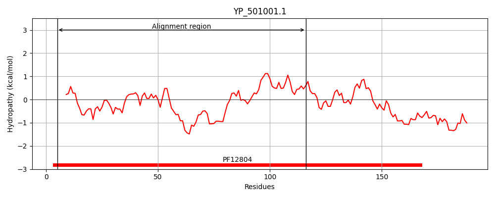
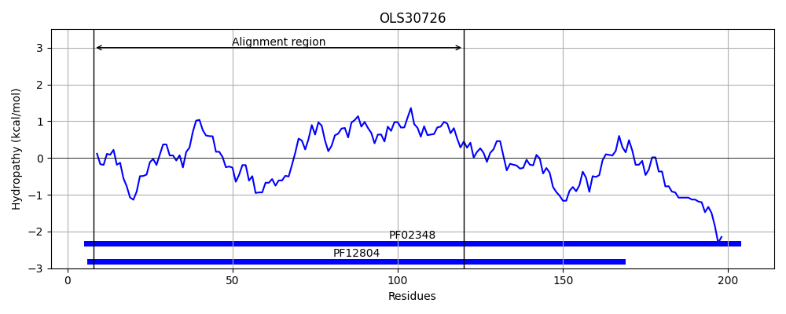
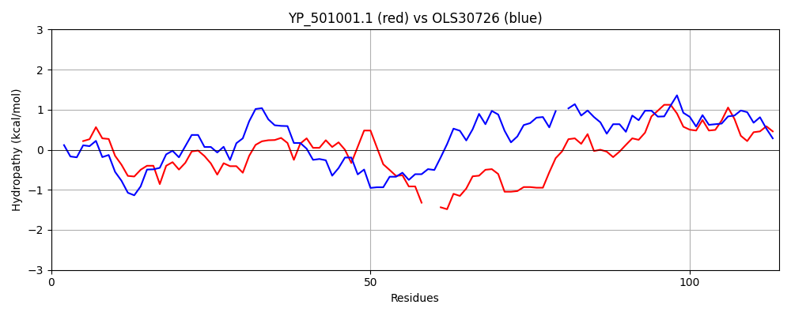

Hit Accession: OLS30726
Hit TCID: 3.D.7.1.5
Hit Description: gnl|BL_ORD_ID|8083 gnl|TC-DB|OLS30726|3.D.7.1.5 Molybdenum cofactor guanylyltransferase [Candidatus Thorarchaeota archaeon AB_25]
Mach Len: 114
e:0.000022
Query TMS Count : 0
Hit TMS Count: 0
TMS-Overlap Score: 0.000000
Predicted Substrates:None
BLAST Alignment:
| Protein Hydropathy Plots: | |
|---|---|
|  |  |
Pairwise Alignment-Hydropathy Plot: | |
|  | |